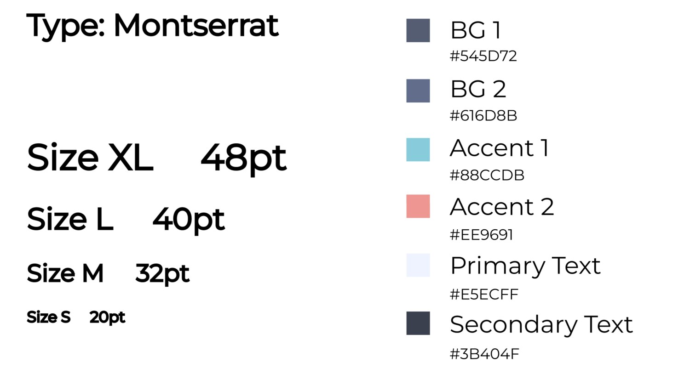
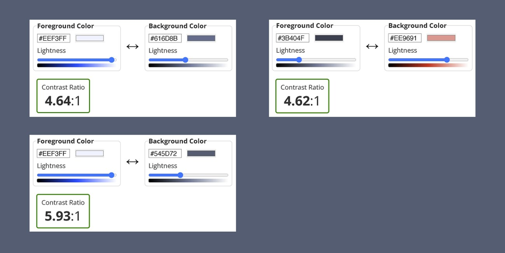
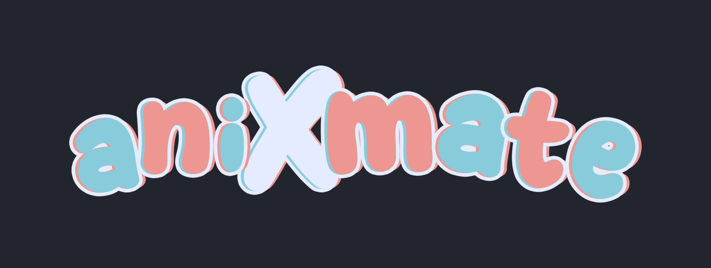
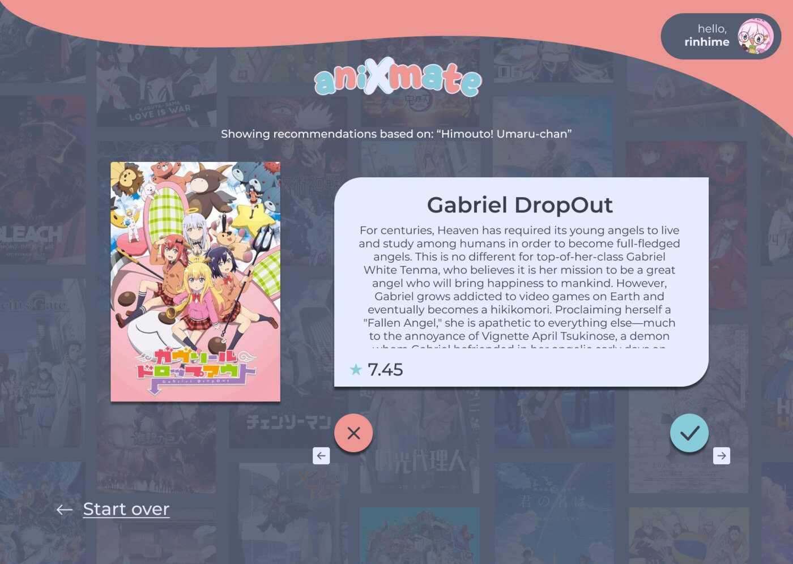
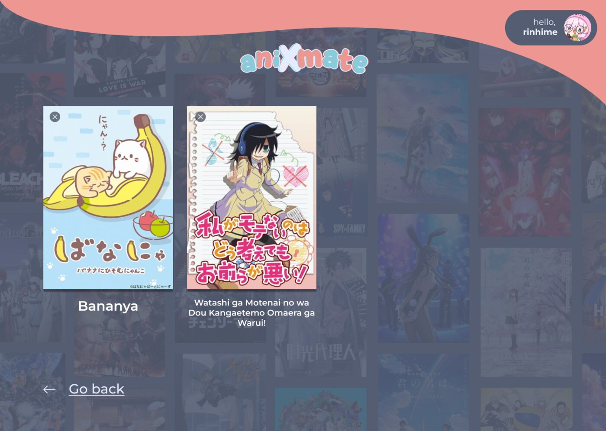

aniXmate recommends anime the way a dating app recommends people. You type in a show you already like, and it hands you recommendations one card at a time: swipe right to save, left to skip.

Context
aniXmate recommends anime the way a dating app recommends people. You type in a show you already like, and it hands you recommendations one card at a time: swipe right to save, left to skip. The recs come from MyAnimeList's community "if you liked this, try this" lists for whatever title you enter.
I'll be honest about what it is. Those recommendations already live on MAL, so you could get the same list by looking the show up and scrolling it yourself. aniXmate doesn't do anything smarter than that. What it does is make the list fun to get through: one card at a time, a quick yes or no, instead of a wall of thumbnails you skim and forget. For a weekend hackathon, making the boring part enjoyable seemed like a better use of our time than starting a real recommendation engine we'd never finish.
My role
I was the only designer on a team of three engineers, so I handled all of it: how the app worked, how it looked, the branding, and the prototype the team built and demoed from. The idea came in vague ("anime recs, but swiping"), and my job was to turn it into something concrete enough to build and show.
Process
The swipe interaction did a lot of work for free. Everyone already knows how to swipe left and right, so there was nothing to teach, and we could spend the time making the cards feel good instead of explaining how they worked.
Since I was the only designer and we were short on time, I built a small design system in Figma (type, colors, buttons, cards) so the screens stayed consistent as they grew and the engineers had one clear thing to build against.

I kept the color contrast accessible from the start. It's easy to handle early and a pain to fix later, so I'd rather just do it up front. I also designed the logo and branding so the thing looked like a real product in the demo instead of a wireframe.


Outcome
- A reusable Figma design system (type, color, buttons, cards) with contrast handled.
- A logo and brand that gave it a consistent identity.
- A working interactive prototype the engineers built from and the judges could pick up and try.


What I'd build with more time. If I'd had longer than a weekend, aniXmate would pull from your actual MAL watchlist and recommend based on what you've already watched and rated, instead of keying off one title you typed in. And swiping right would add a show to your watchlist automatically, so you don't have to go do it yourself.
We left both out on purpose. They need real account login and a lot more backend than a weekend allows, so we shipped the version we could finish. Figuring out what to cut was most of the work.
Reflection
What I actually took away from this: hackathons are full of engineers and short on designers. There are a lot of people who can build and almost no one who wants to figure out what to build or how it should feel. So a lot of projects end up working fine and being impossible to read. You can't tell what they are in the few seconds a judge spends on them.
Handling that side made a real difference to what we could show. I took a vague idea and gave it a shape, a look, and a demo people understood right away. That's around when I realized design was the part I actually wanted to do.